A tymczasem w Cameracie...
.
2015-06-27
Spotykamy się na próbie w Szkole Muzycznej.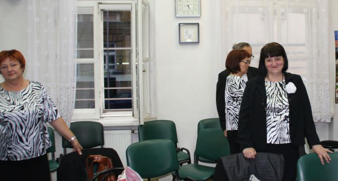
Musimy prześpiewać wszystkie utwory przed koncertami a zwłaszcza Cantatę z akompaniatorką. Akompanije nam wspaniała organistka Maria Zbroja. Do koncertu na Rynku w Wieliczce, podczas Festiwalu Wielickich Artystów, akompaniuje nam Ewa Roeske-Tracz nasza „altówka”.
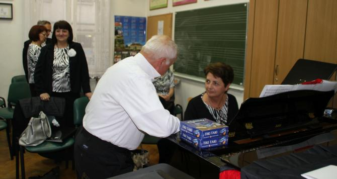
Jesteśmy już w kościele. Podczas mszy oczywiście śpiewamy, ale główny koncert odbędzie się po mszy. Wszyscy skupieni, bo koncert bardzo trudny.
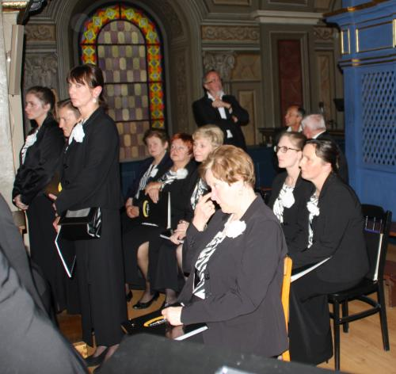 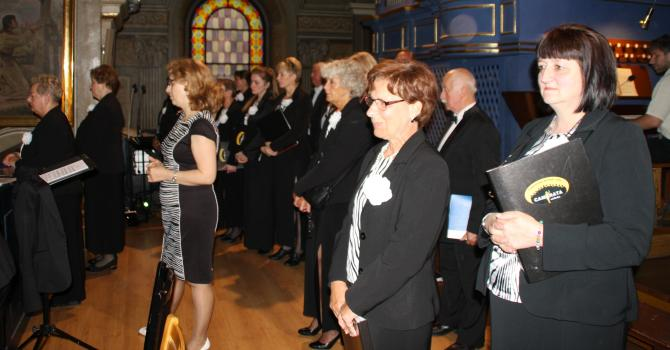
Nooooo wyszło wspaniale!!! Wielkie brawa dla organistki, grała tak, że aż ... Pani Dyrygent ma uśmiech „od ucha do ucha” (dobrze, że ma uszy, bo miała by uśmiech dookoła głowy:)) Szkoda, że nie ma zdjęć, ale nie da się śpiewać i fotografować, gdybym się tak „pętała” robiąc zdjęcia w czasie koncertu, pewnie już bym nie miała głowy :) (nie będę tłumaczyć dlaczego).Chórzyści szczęśliwi, bo mówiąc szczerze mieliśmy wielką tremę, ponieważ Cantata J.S. Bacha jest bardzo trudnym utworem i zdarza się „wywalić” nawet chórom zawodowym. SUPER bez żadnej wpadki i pięknie !!! Dostajemy gromkie brawa.
Teraz idziemy na Rynek, bo zaraz tam dajemy kolejny dzisiaj koncert. Panią Dyrygent już przepytują na scenie
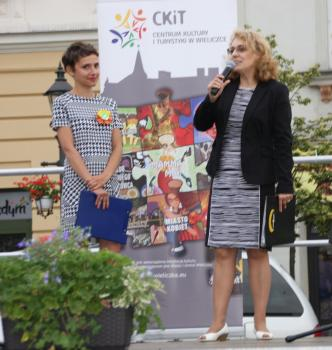 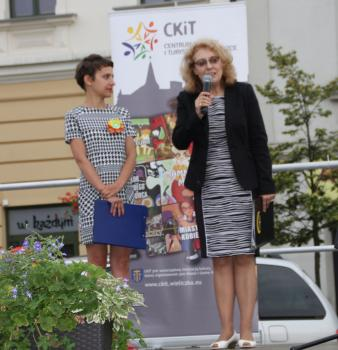
a tymczasem my radośni i uśmiechnięci ustawiamy się do wejścia na scenę (humory dopisują po poprzednim koncercie).
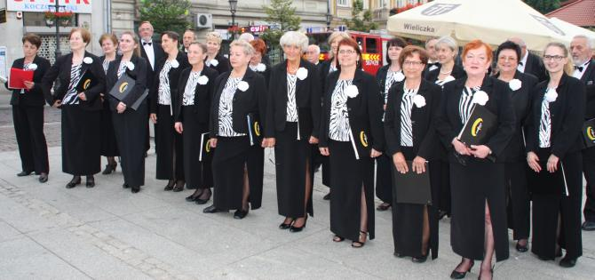
Zaczynamy koncert. Dzisiaj śpiewamy same wesołe i znane utwory, więc publiczność śpiewa z nami.
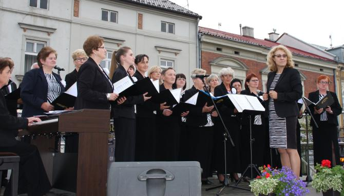 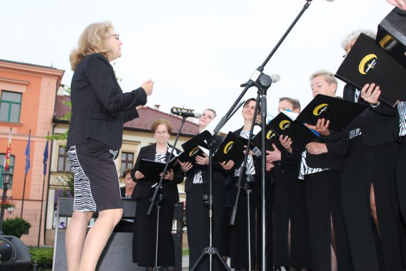
Po koncercie „małe co nieco” i już relaks, ale te miny mówią same za siebie.
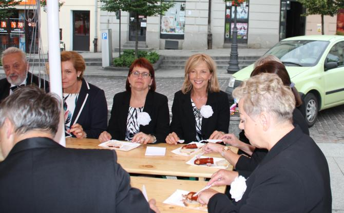 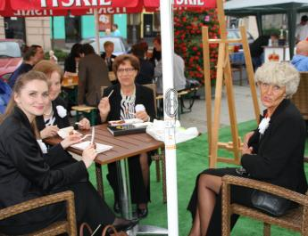 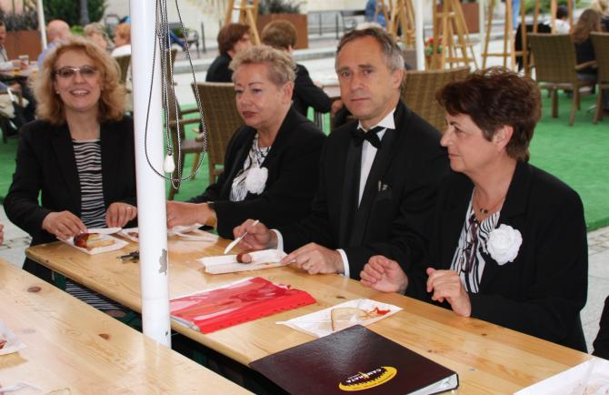

© Stowarzyszenie Muzyczne Chór Camerata Wieliczka
Projekt i wykonanie:  Prowadzenie strony: Małgorzata Wysocka-Cebula
Prowadzenie strony: Małgorzata Wysocka-Cebula